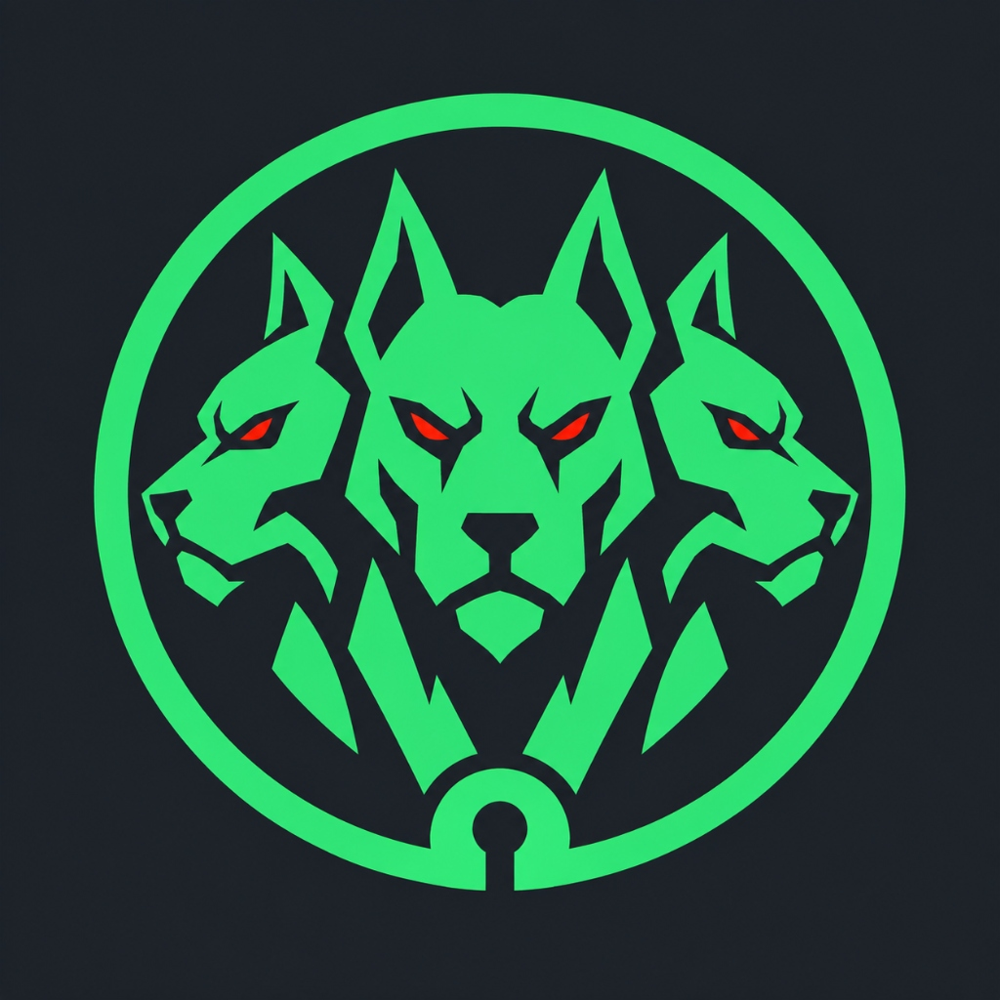

Vultr hackathon submission
Run it.
Prove it.
Retire the box.
Defensive repository verification with observed exploits, isolated execution, and a disposable second chance to prove a fix.

The gap
A model can suspect a flaw.
Only execution can prove one.
“This route looks vulnerable.”
A plausible code path is useful for triage, but it is not evidence that an exploit worked in the running app.
“This request returned our canary.”
Run the app in isolation, send a real test request, and let observed behavior decide whether to report a finding.
Our rule: no finding without a proof.
One run, bounded from start to finish
Find → prove → patch → re-prove.
Allowlisted seeded app or a repo path / HTTPS clone address.
Fetch staged source, run the target with gVisor or Microsandbox, and health-check over the VPC.
Recon and static analysis feed Vultr Inference; an honest offline fallback exists.
Report a finding only when a planted, non-sensitive canary is observed.
Optional re-exploitation runs on a second disposable VX1 in the same runtime.
Check the VX1 returns 404; delete staged source and return bounded results.
Three roles, one execution boundary
The target never needs the control plane's cloud keys.
Web page + proxy
Password-gated browser UI; server-side proxy holds the control bearer.
Control plane
FastAPI jobs, Vultr API, inference, repo source, and per-run readiness registry.
Sandbox host
Runs target on a verified VPC address, then destroys the host after the job.
Inside the disposable Vultr VX1
Choose the boundary for the workload.
gVisor · runsc
A userspace syscall boundary around the running app. Images are built under runc on the disposable host, then run with --runtime=runsc.
Microsandbox
A separate guest-kernel boundary. The target and its dependency installation run inside the microVM on the same disposable VX1.
The environment is the judge
The model ranks. The canary decides.
Recon and static sweep identify reachable candidate sinks.
Vultr Inference ranks a test plan; offline heuristic is labeled when used.
A real confirmer sends HTTP probes to the running app.
Only an observed, request-attributed canary becomes a finding.
Real-stack runs recorded in README · 2026-09-27
What the prototype has actually shown.
Confirmed classes on each of two seeded apps
gVisor scans with live Vultr InferenceCertified closed in a documented remediation run
Re-exploit on a second disposable VX1Host drop-counter change with matching kernel log
Controlled VPC sandbox smoke probeIndependent check after VX1 destruction
Cleanup confirmed for recorded runsSeparate demonstrations: controlled network smoke is not a general egress proof; seeded app success is not arbitrary-repo coverage. Microsandbox also returned 5/5 seeded findings in a recorded run.
A fix has to survive the same test
Patch a disposable copy. Re-run the exploit.
Prove the breach
Run the original target on VX1 #1, capture a canary-confirmed exploit, and destroy that VX1.
Prepare the fix
Apply accepted candidate patches to one cumulative disposable source copy; leave the original untouched.
Re-exploit on VX1 #2
Block the prior exploit, preserve functional behavior, validate the patch, then destroy the second VX1.
“Certified closed” means those tested exploit paths were re-checked—not a guarantee that the repository is safe from all vulnerabilities.
Show the correct surface for each claim
Three interfaces. Different evidence.
Sandbox job UI
site/live.html calls a password-gated proxy, which arms and starts a real sandbox_scan through the control API.
Animated console
The finder and patch loop are real, but this console starts its target as a local subprocess. Its VM animation is not live sandbox execution.
Showcase site
site/index.html tells the story using captured results; it is not connected to the backend.
The orchestration center, not just a place to host a page
Vultr powers every critical step.
Persistent control + disposable VX1s
One private planner; fresh host for target execution and another when re-exploitation is requested.
Reachability-aware triage
The model ranks candidate sinks into a test plan; recorded results disclose the model path.
Private control-to-sandbox path
Provider-verified guest VPC IP, callback-only listener, and a private target endpoint.
Scoped source transfer
Deterministic source tarball staged privately and fetched with a short-lived single-object presigned GET.
What we will not claim
Strong evidence has a defined scope.
Arbitrary repos are not 5/5 by default
SQLi and IDOR require app-specific canaries. Manifest-less environmental canaries currently need to move from the control host into the remote sandbox.
Network containment is not universal
Controlled drop evidence is real; it does not prove all egress is denied. Microsandbox retains its default network posture.
Some trust boundaries remain to harden
gVisor image builds execute under runc on the disposable host. The web demo's password can authorize sequential billable jobs.
Prototype records are not signed receipts
Job state is in memory; durable history, signed commit-bound receipts, and production-grade auth and spending controls remain future work.
Cerberus
Proof, not promises.
The model proposes where to look. The running target and canary provide the verdict. The disposable host is destroyed.
Inspect its actual request and redacted canary evidence.
Re-exploit the patched disposable copy on a second VX1.
Verify the VX1 returns 404 and staged source is removed.